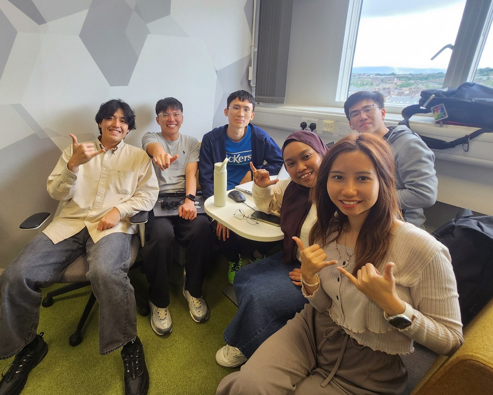

Glasgow Botanic Gardens wants to make its tours welcoming for deaf and blind visitors by learning their specific needs and adapting the current tour materials accordingly.
Introduction
The Friends of Glasgow Botanic Gardens offers free tours to the public seasonally at multiple times throughout the week.
Tours are delivered by volunteer guides who research and train on facts and history about the Gardens, plant collections, wildlife, history, and artworks.
Visitors and locals regularly attend, making use of this special amenity in Glasgow.
The Guides want to offer tours to deaf and/or blind visitors that are meaningful and enjoyable, and seek to understand their unique accessibility needs to adapt existing tour materials and enhance their enjoyment of the Gardens.
Our Research
Navigating Nature (Research)
Explore our original in-depth research findings and accessibility insights that shaped this project.
Project Steps
Week 1 (22 - 25 Jul 2025)
Discovery
Met stakeholders to understand accessibility needs.
Conducted a field visit at the Botanic Gardens.
Sketched early concepts for inclusive features.
📹 Pitch 1 Video
Initial project pitch presentation showcasing our accessibility research and proposed solutions
Week 2 (28 Jul - 1 Aug 2025)
Development
Developed prototypes and poster layout.
Ran usability tests with target users.
Explored improvements during a second site visit.
📹 Pitch 2 Video
Initial project pitch presentation showcasing our accessibility research and proposed solutions
Week 3 (4 - 8 Aug 2025)
Finalization
Refined and printed final materials.
Completed website and accessibility features.
Set up and presented at the public exhibition.
Prototypes & Solutions
Team 6 Members
The Whole Team

Left → Right: Howard, Farm, Yu Cheng, Putri, Xun Yin, Dan
Tee Yu Cheng
Project Website Developer, Video Content Creator
LinkedIn
Strategist - Interactive & Digital Experiences
LinkedIn
Conclusion
Our solution deliberately employs multiple complementary options to address varied accessibility needs, acknowledging that a single solution cannot serve all users or environments effectively.
This includes an Information Board with Braille and QR codes for tactile and digital access, a Textured Guidebook to support tactile exploration, and a Website featuring British Sign Language (BSL) and American Sign Language (ASL) content accessible via QR codes.
This flexible, multi-modal approach enhances adaptability and user choice while maintaining cost-efficiency and scalability. Ultimately, it underscores that effective inclusive design depends on diverse, context-sensitive solutions to achieve meaningful, sustainable impact.